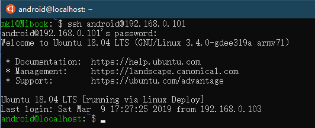
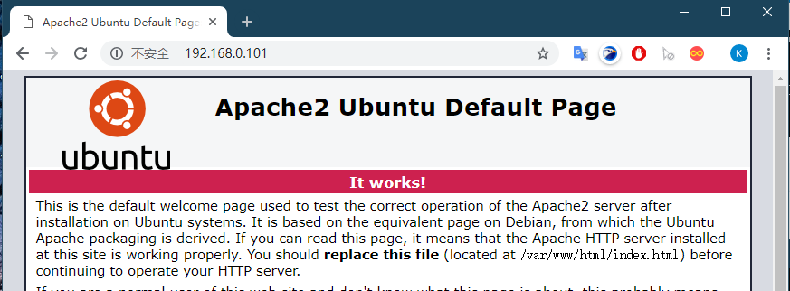
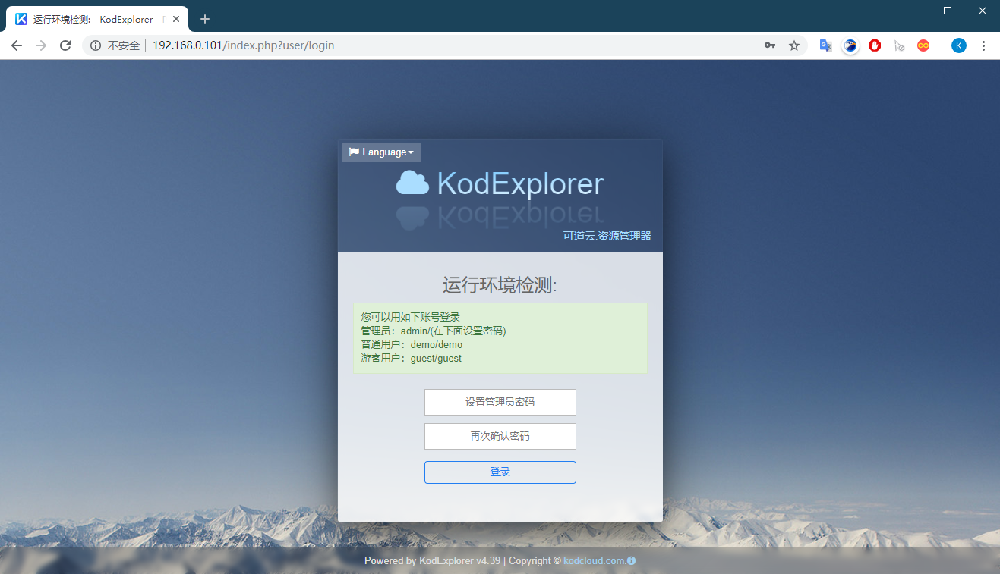
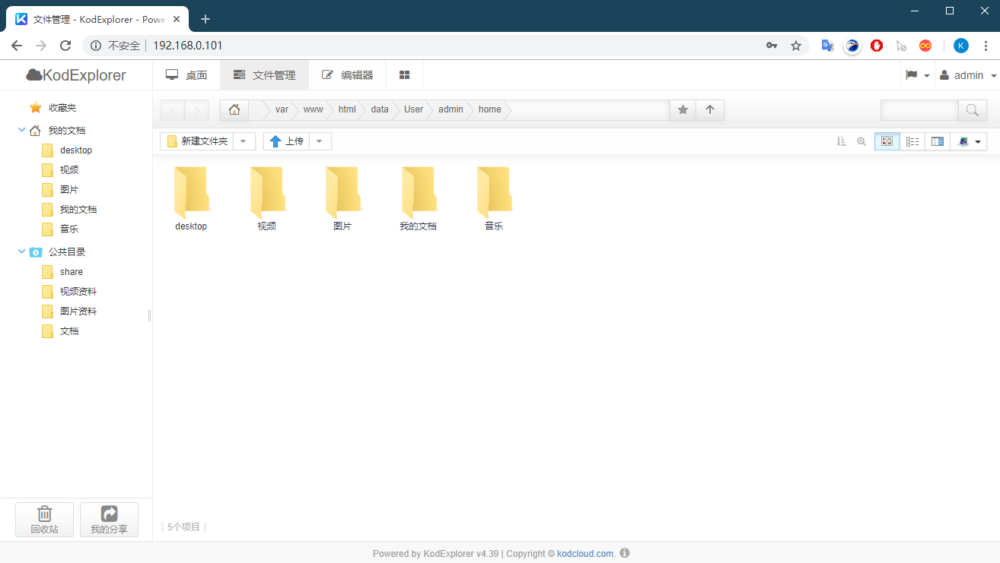
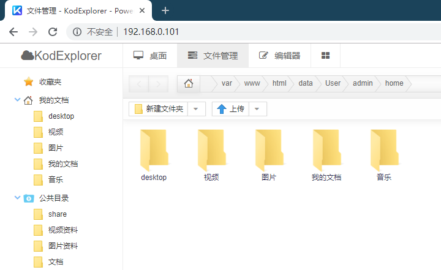
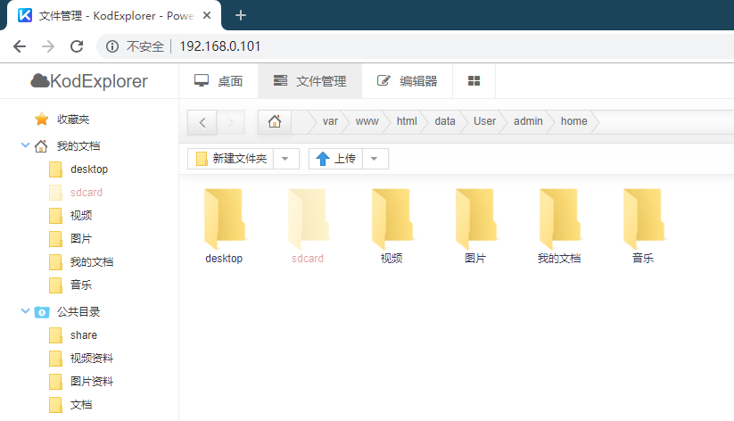
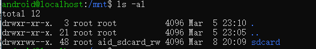
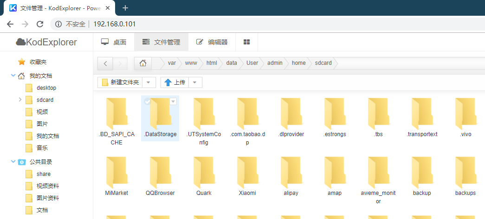

前言
在Andriod手机上部署了ubuntu后，感觉得做点什么才好，先搭建一个云盘服务吧。云盘选用 KodeExplorer ，搭建过程较为简单，完整步骤如下：
- 安装apache
- 部署KodExplorer
安装apache&php
首先连接ubuntu：
1 | ssh android@192.168.0.101 |
输入密码后便进入了ubuntu的shell

开始动手，安装apache
1 | sudo apt install apache2 |
开启服务
1 | sudo /etc/init.d/apache2 start |
不出意外，浏览器中输入Android手机的ip就能见到apache的默认页面

之后安装php
1 | sudo apt install php7.2 |
重启apache
1 | sudo /etc/init.d/apache2 restart |
至此服务环境差不多了，不过还差几个php库，下面用到时再安装
KodExplorer 部署
基础功能部署
之后开始 KodeExplorer 的部署，进入 /var/www/html/ 一顿操作
注意：将下面的
kodexplorer4.40.zip替换为官网最新的版本
1 | cd /var/www/html/ |
刷新一下浏览器应该能看到KodExplorer初始页面
先根据提示安装缺失的php库，之后重启apache，刷新页面
1 | sudo apt install php7.2-curl php7.2-mbstring php7.2-gd |

设置管理员密码后点登录，用户名为 admin 密码为刚设置的密码

Android上部署的ubuntu额外说明
对于android上部署的ubuntu，大部分情况下希望可以从云盘访问sdcard，比如将sdcard放到这里：

对此可将sdcard软链接到这个目录下：
1 | cd /var/www/html/data/User/admin/home/ |
这时候刷新下网页如下：

sdcard已经加进来了，但是因为权限原因无法访问，查看/mnt/sdcard权限如下：

web服务的的用户为 www-data，将 www-data 加入到组 aid_sdcard_rw 并重启apache即可：
1 | sudo usermod -G aid_sdcard_rw www-data |
刷新网页后发现sdcard文件夹已经可打开
